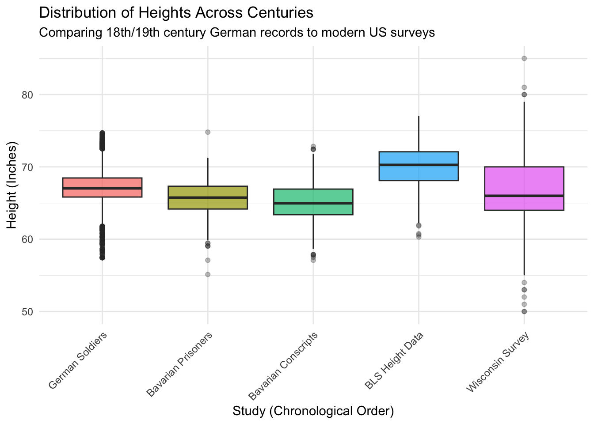

library(haven) # reading .dta (stata) and .sav (SPSS) fileslibrary(foreign) # reading .dbf fileslibrary(readr) # reading .csv fileslibrary(dplyr) library(ggplot2)# 1. German male conscripts in Bavaria (.dta)germanConscr <-read_dta("https://byuistats.github.io/M335/data/heights/germanconscr.dta")# 2. Heights of Bavarian male conscripts (.dta)germanPrison <-read_dta("https://byuistats.github.io/M335/data/heights/germanprison.dta")# 3. Heights of south-east and south-west German soldiers (.zip containing .dbf)# Create a temporary file and a temporary directory to handle the ziptempZip <-tempfile(fileext =".zip")tempDir <-tempdir()# Download the zip file (using mode = "wb" for binary files)download.file("https://byuistats.github.io/M335/data/heights/Heights_south-east.zip", destfile = tempZip, mode ="wb")# Unzip into the temporary directoryunzip(tempZip, exdir = tempDir)# Find the .dbf file that was just unzipped and read itdbfFile <-list.files(tempDir, pattern ="\\.DBF$|\\.dbf$", full.names =TRUE)germanSoldiers <-read.dbf(dbfFile[1])# 4. Bureau of Labor Statistics Height Data (.csv)# We will load it, filter for males (the column is named 'sex' in this dataset), # and add the birth year as 1950.blsDataRaw <-read_csv("https://raw.githubusercontent.com/hadley/r4ds/main/data/heights.csv")blsData <- blsDataRaw %>%filter(sex =="male") %>%mutate(birthYear =1950)# 5. University of Wisconsin National Survey DatawisconsinSurvey <-read_sav("https://www.ssc.wisc.edu/nsfh/wave3/NSFH3%20Apr%202005%20release/main05022005.sav")
2
Code
# 1. Bavarian ConscriptsgermanConscr_clean <- germanConscr %>%mutate(birth_year = bdec, height.cm = height, height.in = height.cm /2.54, # cm -> inchstudy ="Bavarian Conscripts") %>%select(birth_year, height.in, height.cm, study)# 2. Bavarian PrisonersgermanPrison_clean <- germanPrison %>%mutate(birth_year = bdec,height.cm = height, height.in = height.cm /2.54, # cm -> inchstudy ="Bavarian Prisoners") %>%select(birth_year, height.in, height.cm, study)# 3. German Soldiers (18th Century)germanSoldiers_clean <- germanSoldiers %>%mutate(birth_year = GEBJ, # GEBJ = Geburtsjahr (Birth Year)height.cm = CMETER, height.in = height.cm /2.54, # cm -> inchstudy ="German Soldiers") %>%select(birth_year, height.in, height.cm, study)# 4. Wisconsin National SurveywisconsinSurvey_clean <- wisconsinSurvey %>%# Filter out the -1 and -2 "Refused/Don't Know" responses so they don't skew the mathfilter(RT216F >0& RT216I >=0) %>%mutate(birth_year = DOBY, # doby = Date of Birth, Yearheight.in = (RT216F *12) + RT216I, # Combine feet and inches into total inchesheight.cm = height.in *2.54, # cm -> inchstudy ="Wisconsin Survey") %>%select(birth_year, height.in, height.cm, study)# 5. Bureau of Labor StatisticsblsData_clean <- blsData %>%# We already added birth_year as 1950 in the previous step, but just making suremutate(birth_year =1950,height.in = height, height.cm = height.in *2.54,study ="BLS Height Data") %>%select(birth_year, height.in, height.cm, study)# Check the resulthead(blsData_clean)
# A tibble: 6 × 4
birth_year height.in height.cm study
<dbl> <dbl> <dbl> <chr>
1 1950 74.4 189. BLS Height Data
2 1950 72.7 185. BLS Height Data
3 1950 72.0 183. BLS Height Data
4 1950 72.2 183. BLS Height Data
5 1950 69.5 177. BLS Height Data
6 1950 68.0 173. BLS Height Data
Code
# all 5 datasets into one master datasetallHeights <-bind_rows(blsData_clean, germanConscr_clean, germanPrison_clean, germanSoldiers_clean, wisconsinSurvey_clean)
4 (How did I tidy it up?)
To get all these datasets playing nicely together I had to wrangle five totally different file formats (.csv, .dta, .sav, and .dbf) into one clean master dataset. I actually leaned on Gemini to help speed up writing the dplyr logic, which was a huge timesaver! The biggest hurdle was standardizing the units, like the historical German datasets used centimeters, while the modern US ones used inches (or a messy mix of feet and inches). To fix that I just calculated standard height.in and height.cm columns across the board. I also had to make a few hard calls on what data to drop. For the BLS set I filtered out the female participants to keep things apples-to-apples with the male-only German soldier and prisoner records. Finanlly, I scrubbed the Wisconsin survey to drop anyone who answered ‘-1’ or ‘-2’ (‘Refused’ or ‘Don’t Know’), because if I hadn’t caught that, those negative numbers would have completely wrecked the height conversions and skewed the rest of the analysis. After all that, I used bind_rows to stitch everything together into one big tidy dataset.
5
Code
# chronological order of the studies using factors (c())allHeights <- allHeights %>%mutate(study =factor(study, levels =c("German Soldiers", # 18th Century"Bavarian Prisoners", # 19th Century"Bavarian Conscripts", # 19th Century"BLS Height Data", # Mid-20th Century"Wisconsin Survey"# Late 20th/21st Century )))# realistic human heights allHeights_filtered <- allHeights %>%filter(height.in >=48& height.in <=90)ggplot(allHeights_filtered, aes(x = study, y = height.in, fill = study)) +geom_boxplot(alpha =0.7, outlier.alpha =0.3) +theme_minimal() +labs(title ="Distribution of Heights Across Centuries",subtitle ="Comparing 18th/19th century German records to modern US surveys", x ="Study (Chronological Order)", y ="Height (Inches)") +theme(axis.text.x =element_text(angle =45, hjust =1), legend.position ="none" )

6
When you look at the plot I just generated, the story it tells seems pretty straightforward at first, but then it throws a massive curveball that seems to contradict everything. If you just look at the progression from the 18th and 19th-century German records to the mid-20th-century BLS data, the median height clearly trends upward, jumping from around 65-67 inches to about 70 inches. But then we hit the Wisconsin Survey data from the late 20th century, and the median suddenly tanks back down to around 66 inches, contradicting the whole “up-and-to-the-right” growth trend. If you were just glancing at the chart, you’d think humans peaked in the 1950s and then started shrinking. But the contradiction makes perfect sense when you look under the hood at the data dictionary. The German military/prison records and the BLS dataset we filtered were strictly male-only samples. The Wisconsin survey, however, didn’t have a gender identifier, meaning it’s a mix of both men and women. Because women have a lower average height, throwing them into the dataset naturally drags the median down and widens the overall spread of the boxplot.
So, if someone asserted that “humans are getting taller over time” based strictly on these datasets, I’d tell them they are technically right, but their data hygiene is a little sloppy. You can clearly see the historical growth trend when comparing the historic male-only datasets to the modern male-only BLS dataset as nutrition, medicine, and living conditions improved over the centuries, average heights went up. But you simply can’t use the Wisconsin survey to prove or disprove that specific trend because it’s an apples-to-oranges comparison. Overall, my stance is that while the data absolutely supports the idea that human height increased over the last few hundred years, this whole exercise is a massive warning about why you can’t just blindly bind_rows() on random datasets and trust the visualization without understanding exactly who is in your sample.
(Shoutout to Gemini for helping me debug the R code, figure out the missing variables, and wrangle these messy datasets into shape to build out this analysis!)